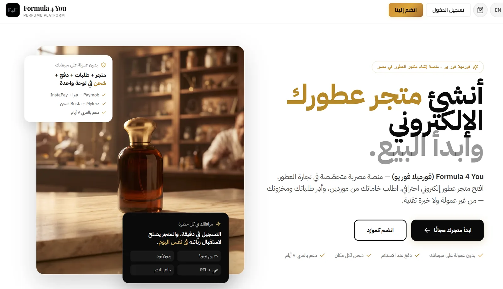

I make complicated businesses easier to run — and easier to buy from.
I look at customer behaviour, operating friction and commercial priorities together. The result is usually a clearer journey, a leaner process or a better business decision.
and operating work
customer reviews
commerce platform
The small signal behind the larger problem.
Start with what is happening. End with what changes.
I do not begin with a preferred framework or tool. I start with the evidence closest to the problem, find the constraint and define a practical next move.
Read the signals
Customer questions, stalled work, missed handoffs, business data and the details people have learned to work around.
Find the real constraint
Separate symptoms from causes, connect the teams involved and decide what matters before anyone starts building.
Make the next move clear
A simpler workflow, a sharper customer journey, better requirements or a priority the business can defend.
Different settings. The same habit: follow the evidence.
My work spans customer operations, business improvement and founder-led digital commerce. These examples show the decisions I owned and the reasoning behind them.
What customer patterns reveal about the wider business.
At Alpha Capital Group, recurring questions, objections and escalations were more than isolated cases. They showed where communication, ownership and service workflows needed attention. That perspective shaped my progression from customer support to Customer Manager.

Formula4You — from market gap to live platform
Founder of a specialist commerce platform for Egypt's fragrance market. The work began with a market gap and grew into a business model, participant journeys, operating rules and platform priorities.
“Repeated questions are not always a support problem. Sometimes they are evidence that the business has made something hard.”
The same work, shown for the decision you need to make.
Recruiters need evidence of judgment and ownership. Founders need to know whether I can help with the problem in front of them. Each route gets to the answer quickly.
See the judgment behind the CV.
Career evidence, selected decisions, scope of contribution and the kind of problems Ahmed can own inside a team.
Follow the employer route → For businessesStart with the problem, not a service menu.
A short diagnostic route for founders who need clarity around growth, customer journeys or operating friction.
Follow the business route →